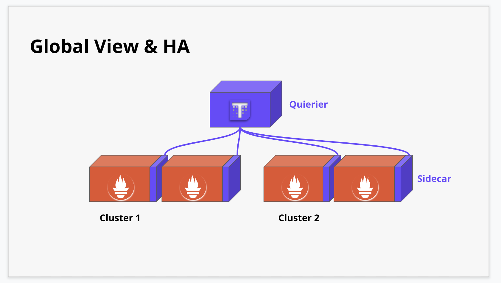
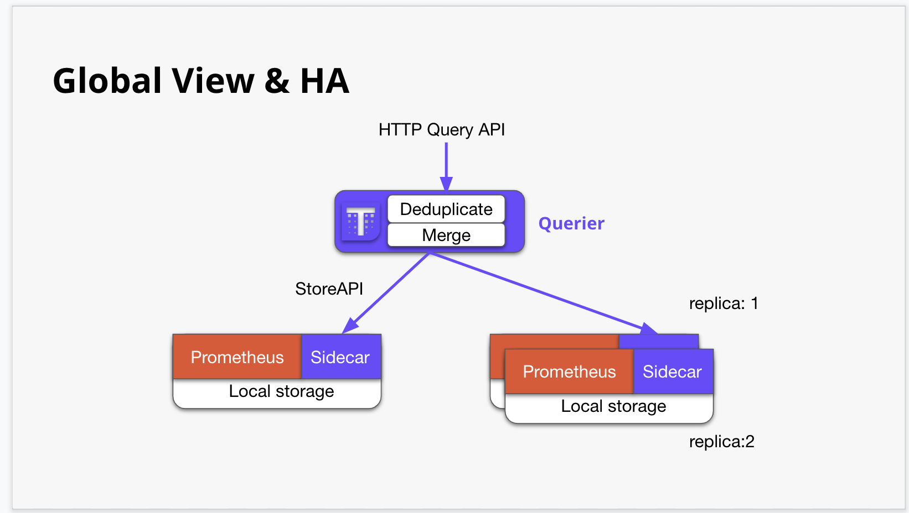
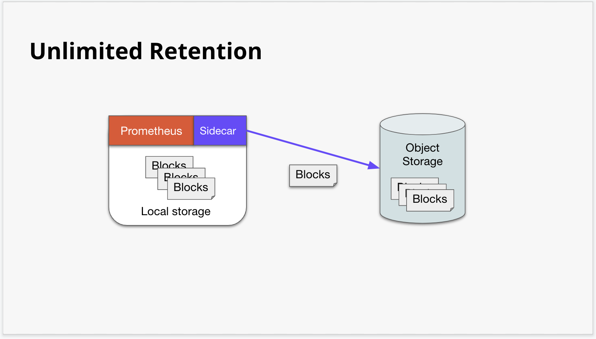
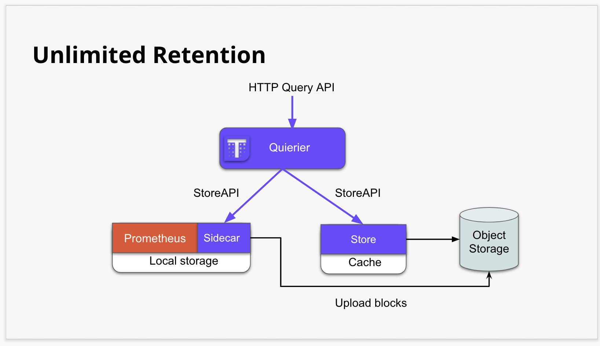
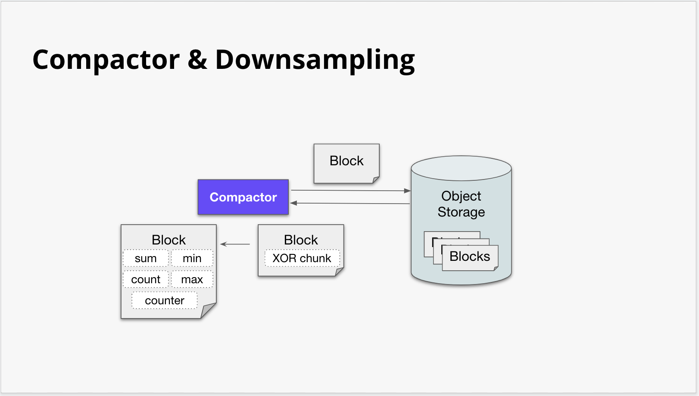
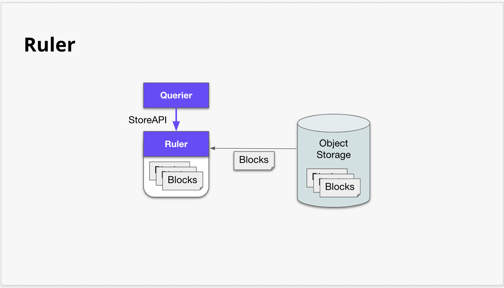

<!DOCTYPE html>
<html lang="en">

<!-- Head tag -->
<head><meta name="generator" content="Hexo 3.8.0">
    <meta charset="utf-8">
    <meta http-equiv="X-UA-Compatible" content="IE=edge">
    <meta name="google-site-verification" content="jJnpQjFutFaHT1yZV38mcuySEQjIm1b_DWfx3GfBoII">
    <meta name="viewport" content="width=device-width, initial-scale=1">
    <meta name="description" content="Notes about technology, DevOps, programming, and database">
    <meta name="keyword" content="AWS, golang, python, DevOps">
    <meta property="og:title" content="Coscup 分享 - HA Prometheus Solution Thanos - Kakashi&#39;s Blog">
    <meta property="og:description" content="Thanos 真的很不錯！">
    <meta property="og:image" content="http://kkc.github.io/2019/08/22/coscup-ha-prometheus-solution-thanos/./star.jpeg">
    <link rel="shortcut icon" href="/img/favicon.ico">
    <!-- Place this tag in your head or just before your close body tag. -->
    <script async defer src="https://buttons.github.io/buttons.js"></script>
    <title>
        
          Coscup 分享 - HA Prometheus Solution Thanos - Kakashi&#39;s Blog
        
    </title>

    <link rel="canonical" href="http://kkc.github.io/2019/08/22/coscup-ha-prometheus-solution-thanos/">

    <!-- Bootstrap Core CSS -->
    <link rel="stylesheet" href="/css/bootstrap.min.css">

    <!-- Custom CSS --> 
    <link rel="stylesheet" href="/css/beantech.min.css">
    
    <!-- Pygments Highlight CSS -->
    <link rel="stylesheet" href="/css/highlight.css">

    <link rel="stylesheet" href="/css/widget.css">

    <link rel="stylesheet" href="/css/rocket.css">

    <link rel="stylesheet" href="/css/signature.css">

    <link rel="stylesheet" href="/css/toc.css">

    <!-- Custom Fonts -->
    <link href="https://maxcdn.bootstrapcdn.com/font-awesome/4.7.0/css/font-awesome.min.css" rel="stylesheet" type="text/css">
    <link href="http://fonts.googleapis.com/css?family=Lora:400,700,400italic,700italic" rel="stylesheet" type="text/css">
    <link href="http://fonts.googleapis.com/css?family=Open+Sans:300italic,400italic,600italic,700italic,800italic,400,300,600,700,800" rel="stylesheet" type="text/
    css">

    <!-- HTML5 Shim and Respond.js IE8 support of HTML5 elements and media queries -->
    <!-- WARNING: Respond.js doesn't work if you view the page via file:// -->
    <!--[if lt IE 9]>
        <script src="https://oss.maxcdn.com/libs/html5shiv/3.7.0/html5shiv.js"></script>
        <script src="https://oss.maxcdn.com/libs/respond.js/1.4.2/respond.min.js"></script>
    <![endif]-->

    <!-- ga & ba script hoook -->
    <script></script>
</head>


<!-- hack iOS CSS :active style -->
<body ontouchstart="">
	<!-- Modified by Yu-Hsuan Yen -->
<!-- Post Header -->
<style type="text/css">
    header.intro-header{
        
            background-image: url('./star.jpeg')
            /*post*/
        
    }
    
</style>

<header class="intro-header">
    <!-- Signature -->
    <div id="signature">
        <div class="container">
            <div class="row">
                <div class="col-lg-8 col-lg-offset-2 col-md-10 col-md-offset-1">
                
                    <div class="post-heading">
                        <div class="tags">
                            
                              <a class="tag" href="/tags/#Prometheus" title="Prometheus">Prometheus</a>
                            
                              <a class="tag" href="/tags/#Thanos" title="Thanos">Thanos</a>
                            
                              <a class="tag" href="/tags/#CNCF" title="CNCF">CNCF</a>
                            
                        </div>
                        <h1>Coscup 分享 - HA Prometheus Solution Thanos</h1>
                        <h2 class="subheading">Thanos 真的很不錯！</h2>
                        <span class="meta">
                            Posted by Kakashi on
                            2019-08-22
                        </span>
                    </div>
                


                </div>
            </div>
        </div>
    </div>
</header>

	
    <!-- Navigation -->
<nav class="navbar navbar-default navbar-custom navbar-fixed-top">
    <div class="container-fluid">
        <!-- Brand and toggle get grouped for better mobile display -->
        <div class="navbar-header page-scroll">
            <button type="button" class="navbar-toggle">
                <span class="sr-only">Toggle navigation</span>
                <span class="icon-bar"></span>
                <span class="icon-bar"></span>
                <span class="icon-bar"></span>
            </button>
            <a class="navbar-brand" href="/">Kakashi&#39;s Notes</a>
        </div>

        <!-- Collect the nav links, forms, and other content for toggling -->
        <!-- Known Issue, found by Hux:
            <nav>'s height woule be hold on by its content.
            so, when navbar scale out, the <nav> will cover tags.
            also mask any touch event of tags, unfortunately.
        -->
        <div id="huxblog_navbar">
            <div class="navbar-collapse">
                <ul class="nav navbar-nav navbar-right">
                    <li>
                        <a href="/">Home</a>
                    </li>

                    

                        
                    

                        
                        <li>
                            <a href="/archive/">Archives</a>
                        </li>
                        
                    

                        
                        <li>
                            <a href="/tags/">Tags</a>
                        </li>
                        
                    

                    <li>
                        <a href="/atom.xml">Subscribe</a>
                    </li>
                </ul>
            </div>
        </div>
        <!-- /.navbar-collapse -->
    </div>
    <!-- /.container -->
</nav>
<script>
    // Drop Bootstarp low-performance Navbar
    // Use customize navbar with high-quality material design animation
    // in high-perf jank-free CSS3 implementation
    var $body   = document.body;
    var $toggle = document.querySelector('.navbar-toggle');
    var $navbar = document.querySelector('#huxblog_navbar');
    var $collapse = document.querySelector('.navbar-collapse');

    $toggle.addEventListener('click', handleMagic)
    function handleMagic(e){
        if ($navbar.className.indexOf('in') > 0) {
        // CLOSE
            $navbar.className = " ";
            // wait until animation end.
            setTimeout(function(){
                // prevent frequently toggle
                if($navbar.className.indexOf('in') < 0) {
                    $collapse.style.height = "0px"
                }
            },400)
        }else{
        // OPEN
            $collapse.style.height = "auto"
            $navbar.className += " in";
        }
    }
</script>


    <!-- Main Content -->
    <!-- Modify by Yu-Hsuan Yen -->

<!-- Post Content -->
<article>
    <div class="container">
        <div class="row">

            <!-- Post Container -->
            <div class="
                col-lg-8 col-lg-offset-2
                col-md-10 col-md-offset-1
                post-container">

                <p> 上個月參加了 Coscup，完成了我的 Coscup 講者處女秀，對比三年前當主持人，其實當講者輕鬆了不少，而且看到很多熟面孔的感覺非常好。</p>
<p> 這次參加的 SDN x Cloud Native x Golang 議程軌，其實有非常多的好主題，而我也分享了一個跟 CNCF &amp; Golang 有相關的 Opensource Project - Thanos，Thanos 主要就是為了解決 Prometheus 的 Global View &amp; High Availability &amp; Long-term storage 的問題，一直以來 Prometheus 作為 Cloud Native 主要監控元件，在經過社群的努力下，其實以單台 Prometheus 而言，效能和儲存效率上已經獲得很大的改善，目前是非常成熟的方案，但是在談到在部署多個 Prometheus 的情況時，往往會遇到一些問題像是，如何透過 PromQL Query 不同台的 Prometheus 並且 aggregate/merge 其中的資料，另外是 long-term storage 的問題，像是如何將歷史資料保存起來，而不是只有寫在 Prometheus 單體的 SSD 上面，這幾個問題就造就了 Thanos, Cortex, Uber M3 等等 Opensource 的存在。</p>
<h2 id="HA-prometheus-solution-Thanos"><a href="#HA-prometheus-solution-Thanos" class="headerlink" title="HA prometheus solution - Thanos"></a>HA prometheus solution - Thanos</h2><p> 我的投影片分享如下 <br><a href="https://docs.google.com/presentation/d/1KBs4FxYwFL6dsz_JUbPK4ZiKXYjsaLZI21VgVLI54I4" target="_blank" rel="noopener">https://docs.google.com/presentation/d/1KBs4FxYwFL6dsz_JUbPK4ZiKXYjsaLZI21VgVLI54I4</a></p>
<p> 前面幾頁就在講解單體 Prometheus 的問題，而就算使用了 Federate 之後，這個架構還是會有其他的問題，像是資料會被重複儲存在兩個地方，還有被拉取的 Prometheus 機器時也有可能發生 timeout 而很多情況下我們可能不會把所有的東西都拉到該機器上，另外壓力都會落在 Federate 起來的那台機器上面，這樣一來又還是需要到個別的 Prometheus 機器上面去做 Query，造成很多管理上面的不便。</p>
<p> 而 Thanos 主要實現了三個願望 </p>
<ul>
<li>Have a global view</li>
<li>Have an HA in place</li>
<li>Unlimited retention</li>
</ul>
<h3 id="Global-View-amp-HA"><a href="#Global-View-amp-HA" class="headerlink" title="Global View &amp; HA"></a>Global View &amp; HA</h3><p><br></p>
<p> 可以看這張圖比較下使用 Thanos 取代 Prometheus Federate，基本上 Thanos 使用 Sidecar Pattern，就算你有既有的 Prometheus 正在跑著，也可以透過 Sidecar 這個元件去做讀取，Querier 這個元件使用了 Thanos 定義的 StoreAPI 從 Sidecar 中讀取資料，Querier 裡面有 Deduplicate 和 Merge 的功能，所以也不用怕資料散在不同的 Promethues 上面，Deduplicate 主要是可以透過 Label 去認出相同的資料，這樣就不會重複把同一條線畫出來。</p>
<p> 透過這種架構，可以很輕鬆的達成 HA，開兩台 Prometheus 去撈取資料，就算一台 Prometheus 掛掉，Thanos Querier 還是可以讀取其中一台，然後兩台都活著的時候， Deduplicate 可以將資料去重。</p>
<h3 id="Unlimited-Retention"><a href="#Unlimited-Retention" class="headerlink" title="Unlimited Retention"></a>Unlimited Retention</h3><p><br></p>
<p>Thanos 實現 Umlimited Retention 的方式也相當的簡單，就是利用 Sidecar 把 Prometheus 裡面的 Block 讀出來寫到 Object Storage，然後再提供一個 Store 的元件，用來讀取 Object Storage 裡面的 Blocks，這邊很聰明的地方就是 Querier 都是透過 StoreAPI 去做讀取，這個介面一致化後，其實讓 Thanos 變得相當有彈性。</p>
<p> 這邊要寫一下要注意的地方，就是 Prometheus 其實預設是每兩個小時才會把 Memory 裡面的 Block 寫進 local storage，之後 Thanos Sidecar 才有機會將其上傳到 block storage，如果在中途你的 Prometheus crush 了，這樣就會有兩個小時的資料遺失了，所以 Thanos 官網上面其實是建議 Prometheus 如果跑在 k8s 上面，最好是掛著專屬的 PVC，這樣 Prometheus 回來的時候，還可以透過 WAL 回復資料。另外一個雷是 Prometheus 原本 Remote Read 沒有提供 Steaming 的格式，而 Sidecar 在讀取的時候，如果拉了一個 range 超大的資料，會造成 Prometheus OOM，而這個問題也在上個月的這個 <a href="https://github.com/prometheus/prometheus/commit/48b2c9c8eae2d4a286d8e9384c2918aefd41d8de" target="_blank" rel="noopener">PR</a> 解決惹。</p>
<h2 id="Other-Components"><a href="#Other-Components" class="headerlink" title="Other Components"></a>Other Components</h2><p> 基本上使用 Querier, Sidecar, 還有 Store 就可以完成很多的事情，但其實 Thanos 還有提供更多的功能，這邊我介紹了 Compactor 和 Ruler。</p>
<h3 id="Compactor"><a href="#Compactor" class="headerlink" title="Compactor"></a>Compactor</h3><p></p>
<p>Prometheus 的 TSDB 在改寫後，就有提供 Compaction (壓縮) 的功能，基本上就是把 Memory 裡面的資料，透過 delta-of-data &amp; XOR 的方式壓縮，這裡面參考了 Facebook 2015 年發表的論文 <a href="http://citeseerx.ist.psu.edu/viewdoc/download?doi=10.1.1.718.197&amp;rep=rep1&amp;type=pdf" target="_blank" rel="noopener">&lt;Gorilla: A Fast, Scalable, In-Memory Time Series DataBase&gt;</a>，有興趣的人可以看看，而透過這種壓縮方式，Prometheus 可以輕易地儲存很多的 series 以及保存很長的一段時間，而 Thanos compactor 乍看之下好像沒什麼用處，但其實它復用了 Prometheus 的 compactor library，並且在上面擴展了 Downsampling 的功能，也就是將這些 Blocks aggregate 成 5mins 和 1 hours，這樣的做法，可以讓讀取長時間的資料時，可以更快的取出資料，使用的 memory 也會變少，舉例來說，你想要看個半年的資料時，其實沒必要看到 raw data 那麼小的 resolution，其實只要透過 1hours 的資料就可以反推出趨勢，另外 Compactor 會幫忙管理資料的刪除，透過一個 Compactor 管理移除 Block Storage 的資料，其實也是比較好的做法。</p>
<p> 不過在使用 Compactor 時，其實也有一個雷，就是要把 Prometheus 上面的 Compaction 關閉，要不然 Thanos 的 Compactor 還需要多做一步將資料還原才能做 Downsampling。</p>
<h3 id="Ruler"><a href="#Ruler" class="headerlink" title="Ruler"></a>Ruler</h3><p></p>
<p>Ruler 這個元件其實是為了擴展 Alertmanager 而用的，因為使用 Thanos 後，在設定 Prometheus 上，可能會把超過 2 小時的 Block 儲存到 Block Storage 上，然後把 Prometheus 自身的 Retention 關小，如此一來你在 Prometheus 上面設定的 Alert rule 如果觀察的趨勢是超過 2 小時的，就很有可能會失效，另外是在 Query 不同 Cluster 上面，就沒辦法設定一個 Rule 去覆蓋所有的 Cluster，Ruler 給了我們這樣的彈性，可以將 Alert rules 都集中給 Ruler 管理。</p>
<h2 id="Conclusion"><a href="#Conclusion" class="headerlink" title="Conclusion"></a>Conclusion</h2><p> 在投影片中，我還有列舉了一些官網上面建議的部署模式，可以看到 Thanos 也支援一些複雜的情境，然後其實已經有蠻多大公司都用在 Production 上面，所以算是一個成熟的方案，蠻推薦大家可以玩玩看。</p>
<p>Thanos 在七月的時候，也被捐出來給 CNCF，正式成為 CNCF Sandbox 的專案，有了更多資源後，我們可以預期他會越來越好用，社群的人解 issues 和 feedback 的速度也很快，有心玩 golang open source 的人，我覺得 Thanos 是蠻好的一個專案。</p>

                

                <hr>
                <!-- Pager -->
                <ul class="pager">
                    
                    
                        <li class="next">
                            <a href="/2019/05/02/ultimate-note-for-tweaking-fluentd-aggregator/" data-toggle="tooltip" data-placement="top" title="Performance tweaking for fluentd aggregator (EFK stack)">Next Post &rarr;</a>
                        </li>
                    
                </ul>

                <!-- duoshuo Share start -->
                
                <!-- 多说 Share end-->

                <!-- 多说评论框 start -->
                
                <!-- 多说评论框 end -->

                <!-- disqus comment start -->
                
                    <div class="comment">
                        <div id="disqus_thread" class="disqus-thread"></div>
                    </div>
                
                <!-- disqus comment end -->
            </div>
            
            <!-- Tabe of Content -->
            <!-- Table of Contents -->

    
      <aside id="sidebar">
        <div id="toc" class="toc-article">
        <strong class="toc-title">Contents</strong>
        
          <ol class="toc-nav"><li class="toc-nav-item toc-nav-level-2"><a class="toc-nav-link" href="#HA-prometheus-solution-Thanos"><span class="toc-nav-number">1.</span> <span class="toc-nav-text">HA prometheus solution - Thanos</span></a><ol class="toc-nav-child"><li class="toc-nav-item toc-nav-level-3"><a class="toc-nav-link" href="#Global-View-amp-HA"><span class="toc-nav-number">1.1.</span> <span class="toc-nav-text">Global View &amp; HA</span></a></li><li class="toc-nav-item toc-nav-level-3"><a class="toc-nav-link" href="#Unlimited-Retention"><span class="toc-nav-number">1.2.</span> <span class="toc-nav-text">Unlimited Retention</span></a></li></ol></li><li class="toc-nav-item toc-nav-level-2"><a class="toc-nav-link" href="#Other-Components"><span class="toc-nav-number">2.</span> <span class="toc-nav-text">Other Components</span></a><ol class="toc-nav-child"><li class="toc-nav-item toc-nav-level-3"><a class="toc-nav-link" href="#Compactor"><span class="toc-nav-number">2.1.</span> <span class="toc-nav-text">Compactor</span></a></li><li class="toc-nav-item toc-nav-level-3"><a class="toc-nav-link" href="#Ruler"><span class="toc-nav-number">2.2.</span> <span class="toc-nav-text">Ruler</span></a></li></ol></li><li class="toc-nav-item toc-nav-level-2"><a class="toc-nav-link" href="#Conclusion"><span class="toc-nav-number">3.</span> <span class="toc-nav-text">Conclusion</span></a></li></ol>
        
        </div>
      </aside>
    

                
            <!-- Sidebar Container -->
            <div class="
                col-lg-8 col-lg-offset-2
                col-md-10 col-md-offset-1
                sidebar-container">

                <!-- Featured Tags -->
                
                <section>
                    <!-- no hr -->
                    <h5><a href="/tags/">FEATURED TAGS</a></h5>
                    <div class="tags">
                       
                          <a class="tag" href="/tags/#Prometheus" title="Prometheus">Prometheus</a>
                        
                          <a class="tag" href="/tags/#Thanos" title="Thanos">Thanos</a>
                        
                          <a class="tag" href="/tags/#CNCF" title="CNCF">CNCF</a>
                        
                    </div>
                </section>
                

                <!-- Friends Blog -->
                
            </div>
        </div>
    </div>
</article>


<!-- disqus embedded js code start (one page only need to embed once) -->
<script type="text/javascript">
    /* * * CONFIGURATION VARIABLES * * */
    var disqus_shortname = "kkcliu";
    var disqus_identifier = "http://kkc.github.io/2019/08/22/coscup-ha-prometheus-solution-thanos/";
    var disqus_url = "http://kkc.github.io/2019/08/22/coscup-ha-prometheus-solution-thanos/";

    (function() {
        var dsq = document.createElement('script'); dsq.type = 'text/javascript'; dsq.async = true;
        dsq.src = '//' + disqus_shortname + '.disqus.com/embed.js';
        (document.getElementsByTagName('head')[0] || document.getElementsByTagName('body')[0]).appendChild(dsq);
    })();
</script>
<!-- disqus embedded js code start end -->


<!-- async load function -->
<script>
    function async(u, c) {
      var d = document, t = 'script',
          o = d.createElement(t),
          s = d.getElementsByTagName(t)[0];
      o.src = u;
      if (c) { o.addEventListener('load', function (e) { c(null, e); }, false); }
      s.parentNode.insertBefore(o, s);
    }
</script>
<!-- anchor-js, Doc:http://bryanbraun.github.io/anchorjs/ -->
<script>
    async("https://cdn.bootcss.com/anchor-js/1.1.1/anchor.min.js",function(){
        anchors.options = {
          visible: 'hover',
          placement: 'left',
          icon: 'ℬ'
        };
        anchors.add().remove('.intro-header h1').remove('.subheading').remove('.sidebar-container h5');
    })
</script>
<style>
    /* place left on bigger screen */
    @media all and (min-width: 800px) {
        .anchorjs-link{
            position: absolute;
            left: -0.75em;
            font-size: 1.1em;
            margin-top : -0.1em;
        }
    }
</style>


    <!-- Footer -->
    <!-- Footer -->
<footer>
    <div class="container">
        <div class="row">
            <div class="col-lg-8 col-lg-offset-2 col-md-10 col-md-offset-1">
                <ul class="list-inline text-center">
                
                
                    <li>
                        <a target="_blank" href="https://twitter.com/kakashiliu">
                            <span class="fa-stack fa-lg">
                                <i class="fa fa-circle fa-stack-2x"></i>
                                <i class="fa fa-twitter fa-stack-1x fa-inverse"></i>
                            </span>
                        </a>
                    </li>
                
                

                

                
                    <li>
                        <a target="_blank" href="https://www.facebook.com/kkcliu">
                            <span class="fa-stack fa-lg">
                                <i class="fa fa-circle fa-stack-2x"></i>
                                <i class="fa fa-facebook fa-stack-1x fa-inverse"></i>
                            </span>
                        </a>
                    </li>
                

                
                    <li>
                        <a target="_blank" href="https://github.com/kkcliu">
                            <span class="fa-stack fa-lg">
                                <i class="fa fa-circle fa-stack-2x"></i>
                                <i class="fa fa-github fa-stack-1x fa-inverse"></i>
                            </span>
                        </a>
                    </li>
                

                
                    <li>
                        <a target="_blank" href="https://www.linkedin.com/in/kkcliu">
                            <span class="fa-stack fa-lg">
                                <i class="fa fa-circle fa-stack-2x"></i>
                                <i class="fa fa-linkedin fa-stack-1x fa-inverse"></i>
                            </span>
                        </a>
                    </li>
                

                </ul>
                <p class="copyright text-muted">
                    Copyright &copy; Kakashi 2019 
                    <br>
                    Theme by <a href="http://huangxuan.me">Hux</a> 
                    <span style="display: inline-block; margin: 0 5px;">
                        <i class="fa fa-heart"></i>
                    </span> 
                    re-Ported by <a href="http://beantech.org">BeanTech</a> | 
                    <iframe style="margin-left: 2px; margin-bottom:-5px;" frameborder="0" scrolling="0" width="91px" height="20px" src="https://ghbtns.com/github-btn.html?user=YenYuHsuan&repo=hexo-theme-beantech&type=star&count=true">
                    </iframe>
                </p>
            </div>
        </div>
    </div>
</footer>

<!-- jQuery -->
<script src="/js/jquery.min.js"></script>

<!-- Bootstrap Core JavaScript -->
<script src="/js/bootstrap.min.js"></script>

<!-- Custom Theme JavaScript -->
<script src="/js/hux-blog.min.js"></script>


<!-- async load function -->
<script>
    function async(u, c) {
      var d = document, t = 'script',
          o = d.createElement(t),
          s = d.getElementsByTagName(t)[0];
      o.src = u;
      if (c) { o.addEventListener('load', function (e) { c(null, e); }, false); }
      s.parentNode.insertBefore(o, s);
    }
</script>

<!-- 
     Because of the native support for backtick-style fenced code blocks 
     right within the Markdown is landed in Github Pages, 
     From V1.6, There is no need for Highlight.js, 
     so Huxblog drops it officially.

     - https://github.com/blog/2100-github-pages-now-faster-and-simpler-with-jekyll-3-0  
     - https://help.github.com/articles/creating-and-highlighting-code-blocks/    
-->
<!--
    <script>
        async("http://cdn.bootcss.com/highlight.js/8.6/highlight.min.js", function(){
            hljs.initHighlightingOnLoad();
        })
    </script>
    <link href="http://cdn.bootcss.com/highlight.js/8.6/styles/github.min.css" rel="stylesheet">
-->


<!-- jquery.tagcloud.js -->
<script>
    // only load tagcloud.js in tag.html
    if($('#tag_cloud').length !== 0){
        async("http://kkc.github.io/js/jquery.tagcloud.js",function(){
            $.fn.tagcloud.defaults = {
                //size: {start: 1, end: 1, unit: 'em'},
                color: {start: '#bbbbee', end: '#0085a1'},
            };
            $('#tag_cloud a').tagcloud();
        })
    }
</script>

<!--fastClick.js -->
<script>
    async("https://cdn.bootcss.com/fastclick/1.0.6/fastclick.min.js", function(){
        var $nav = document.querySelector("nav");
        if($nav) FastClick.attach($nav);
    })
</script>


<!-- Google Analytics -->


<script>
    // dynamic User by Hux
    var _gaId = 'UA-64932988-1';
    var _gaDomain = 'kkc.github.io';

    // Originial
    (function(i,s,o,g,r,a,m){i['GoogleAnalyticsObject']=r;i[r]=i[r]||function(){
    (i[r].q=i[r].q||[]).push(arguments)},i[r].l=1*new Date();a=s.createElement(o),
    m=s.getElementsByTagName(o)[0];a.async=1;a.src=g;m.parentNode.insertBefore(a,m)
    })(window,document,'script','//www.google-analytics.com/analytics.js','ga');

    ga('create', _gaId, _gaDomain);
    ga('send', 'pageview');
</script>


<!-- Baidu Tongji -->


	<a id="rocket" href="#top" class=""></a>
	<script type="text/javascript" src="/js/totop.js?v=1.0.0" async=""></script>
    <script type="text/javascript" src="/js/toc.js?v=1.0.0" async=""></script>
<!-- Image to hack wechat -->

<!-- Migrate from head to bottom, no longer block render and still work -->

</body>

</html>
